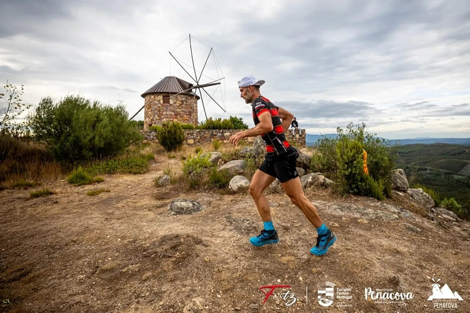
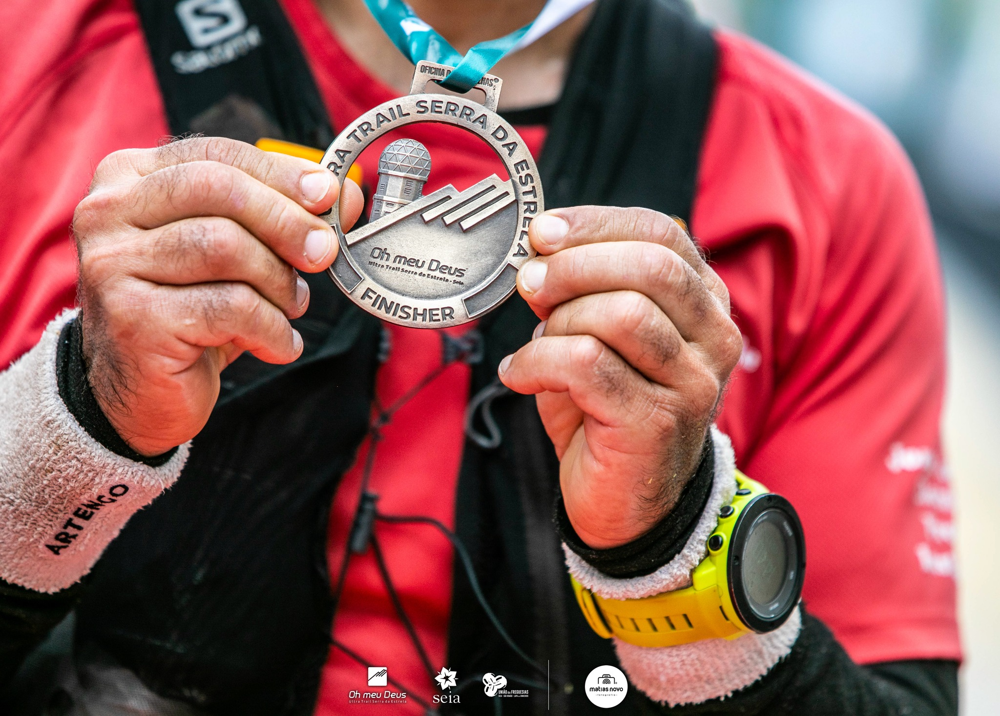
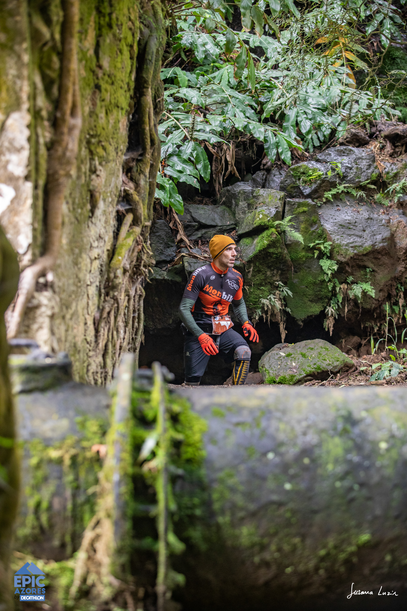
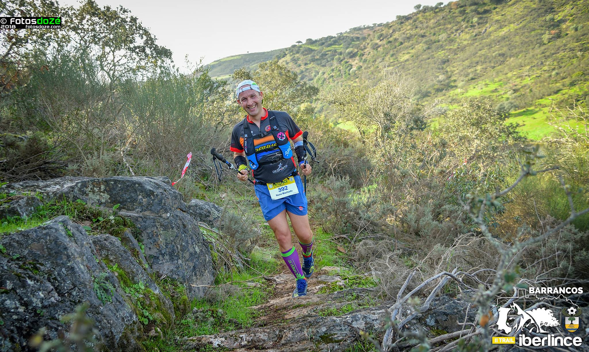
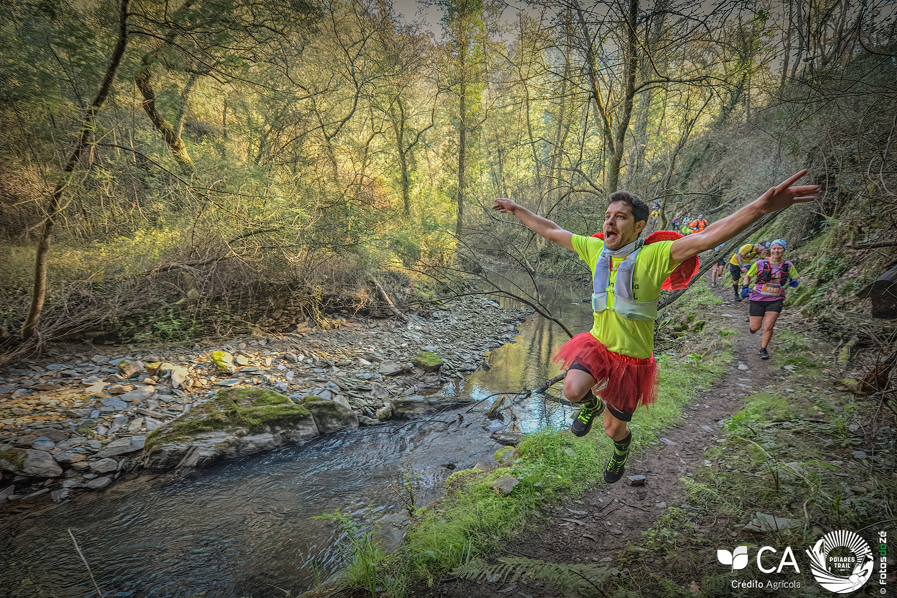

Atleta da edição de 2023
do Trail Boneca Douro,
fotógrafo não identificado.
1 / 6

2 / 6

Atleta da Penacova
Trail do Centro,
fotografia tirada
por Fritz.
Trail do Centro,
fotografia tirada
por Fritz.
3 / 6

Finalista do Oh Meu Deus
mostra a medalha,
fotografia tirada por Matias Novo.
mostra a medalha,
fotografia tirada por Matias Novo.
4 / 6

Atleta da Epic Trail Run Azores emerge
de túnel, fotografia
tirada por Susana Luzir.
de túnel, fotografia
tirada por Susana Luzir.
5 / 6

Nuno Machado participante da 2.ª edição
do Trail Iberlince de Barrancos,
fotografia das Fotos do Zé.
do Trail Iberlince de Barrancos,
fotografia das Fotos do Zé.
6 / 6

É Poiares Trail e é Carnaval, ninguém
leva a mal. Fotografia das Fotos do Zé.
leva a mal. Fotografia das Fotos do Zé.